Violista
Concerti e musica da camera, dal repertorio classico al tango di Astor Piazzolla e alla musica contemporanea. Incisioni per viola, dalle Sonate op. 120 di Brahms a Histoire du Tango.
Ascolta la discografia
Luca Maggioni nasce e cresce tra colori, forme e suoni. Fin dall'infanzia, pittura, scultura e architettura convivono armoniosamente nella sua famiglia, intrecciandosi con la musica in un dialogo continuo tra estetica e sentimento. Questo intreccio di arti diventa per lui un terreno fertile, la matrice di un linguaggio creativo che unisce sensibilità visiva e profondità sonora.
Il suo percorso artistico intreccia memoria e futuro, dove la musica diventa ponte tra sogni e realtà, spazio d'incontro tra persone, culture e sensibilità diverse. È da questa visione che nasce il SETTICLAVIO aps, un'associazione che unisce arte e impegno sociale, dove le note incontrano la solidarietà e si aprono a orizzonti creativi sempre nuovi.
Dopo oltre quarant'anni immerso nel mondo della musica — tra palcoscenici, progetti artistici e collaborazioni — Luca trasforma il suo cammino in una visione ancora più ampia, dando vita a INCD STUDIO: uno spazio di ricerca e creazione, dove il suono si trasforma in materia viva, prende forma, diventa progetto, immagine e racconto.
Oggi Luca Maggioni continua a esplorare i confini tra arte, tecnologia e umanità, fedele alla sua idea che la musica sia, prima di tutto, un modo di abitare il mondo: un gesto di ascolto, di memoria e di speranza.
«La musica non è solo espressione ma un respiro condiviso, un linguaggio universale, ali alla mente, slancio all'immaginazione e vita a tutte le cose»
Concerti e musica da camera, dal repertorio classico al tango di Astor Piazzolla e alla musica contemporanea. Incisioni per viola, dalle Sonate op. 120 di Brahms a Histoire du Tango.
Ascolta la discografiaCon INCD STUDIO, a Milano: registrazione di dischi e concerti, colonne sonore, consulenza musicale per artisti, ensemble e aziende.
INCD STUDIOUna metodologia personale che unisce bass shaker e musica a 432 Hz, ascolto binaurale e visore VR, per il benessere di anziani, persone con demenza, Alzheimer e fragilità.
Il metodo e la consulenzaPresidente del SETTICLAVIO aps e direttore operativo di «Tra le Onde» con la Fondazione Don Carlo Gnocchi: concerti, laboratori e percorsi con musicoterapisti nelle strutture di cura.
il SETTICLAVIO apsLa musica dal vivo è un respiro presente, la registrazione è memoria sonora.


immagini che tracciano un lungo cammino


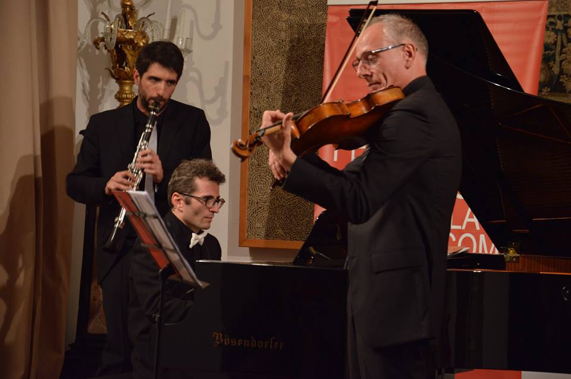
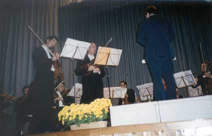
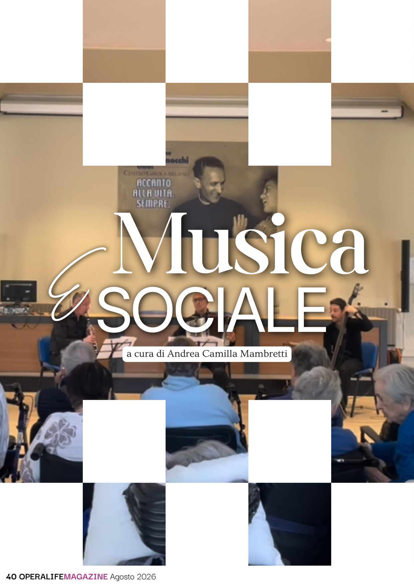
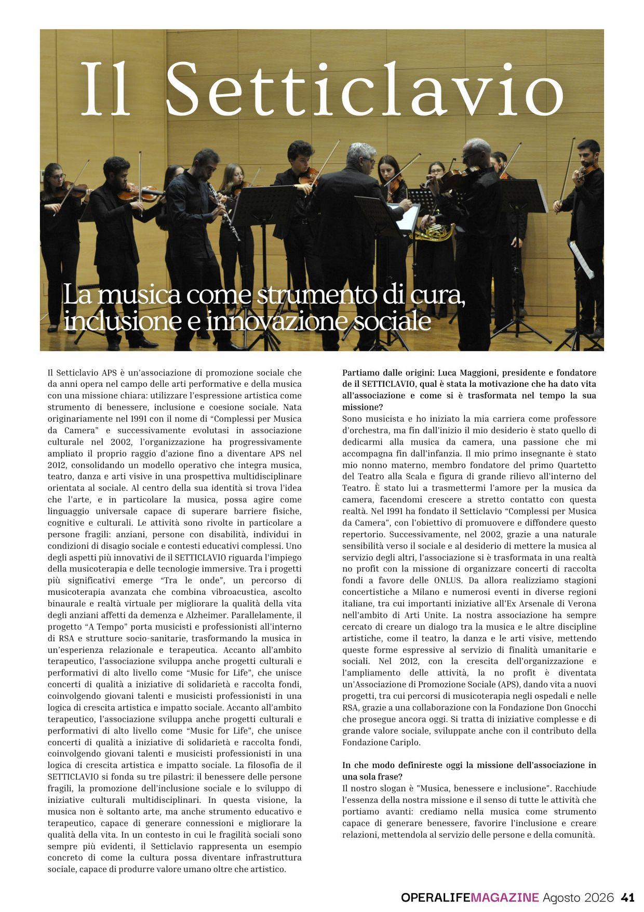
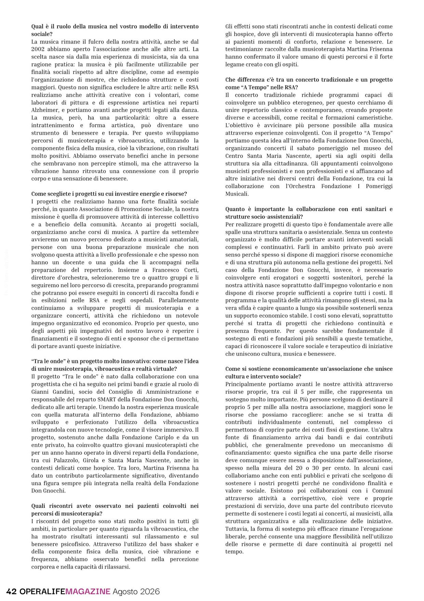
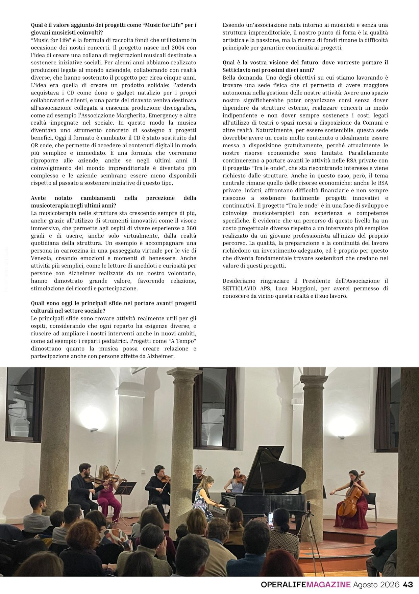
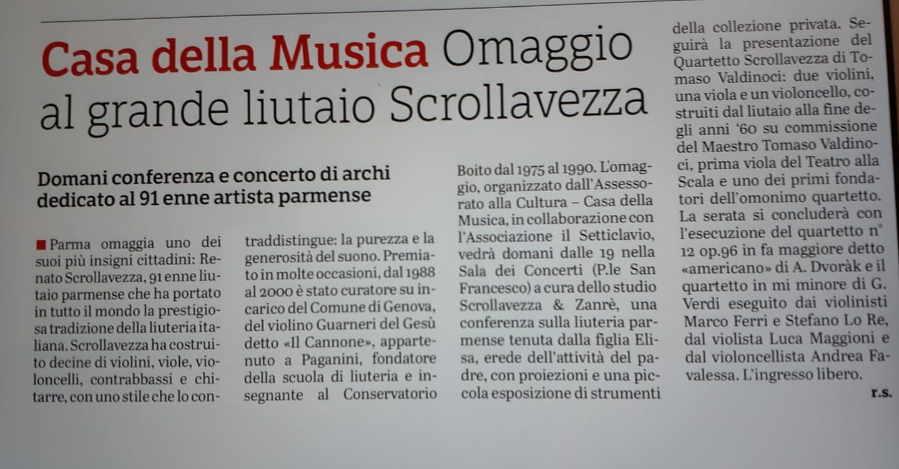
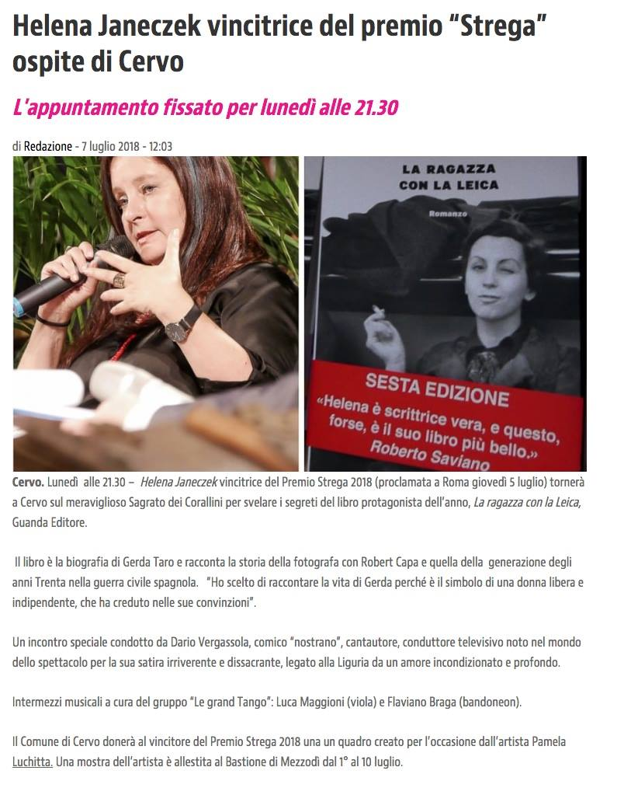
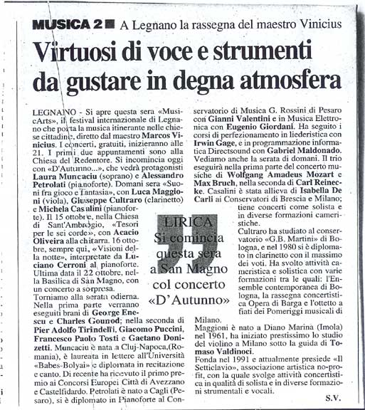


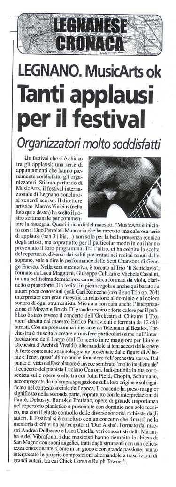
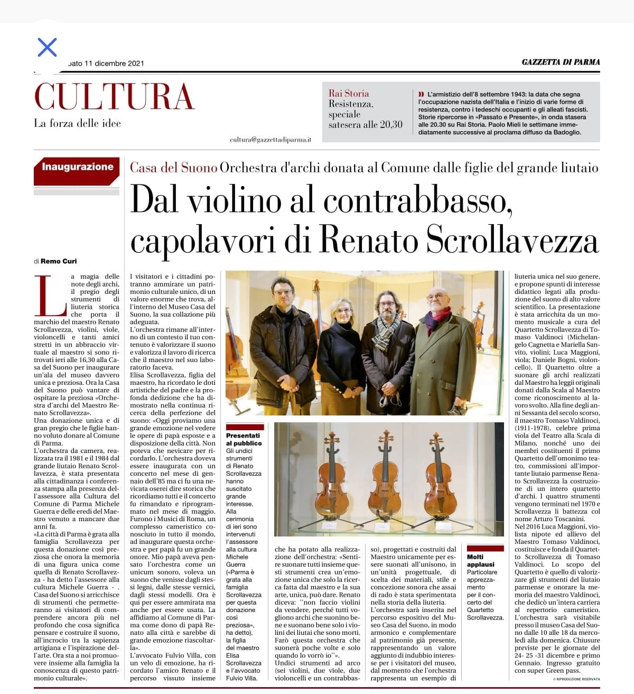
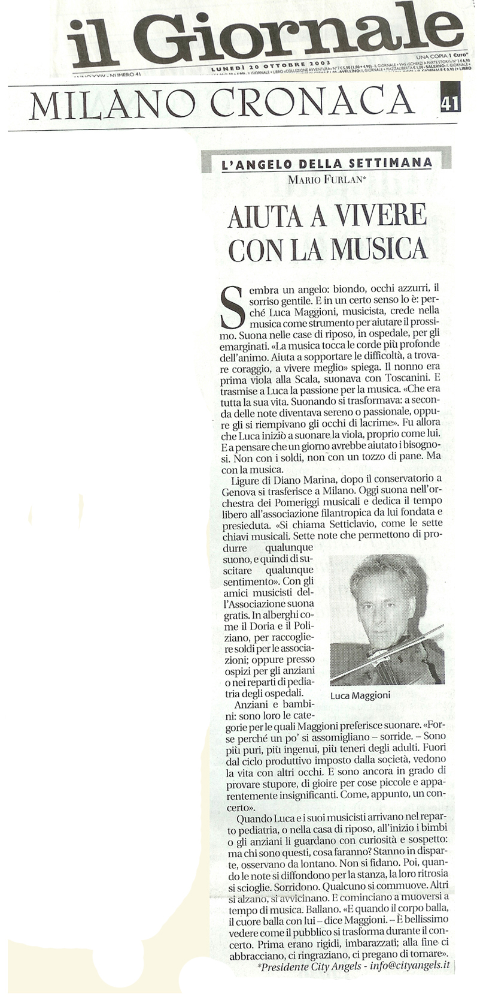
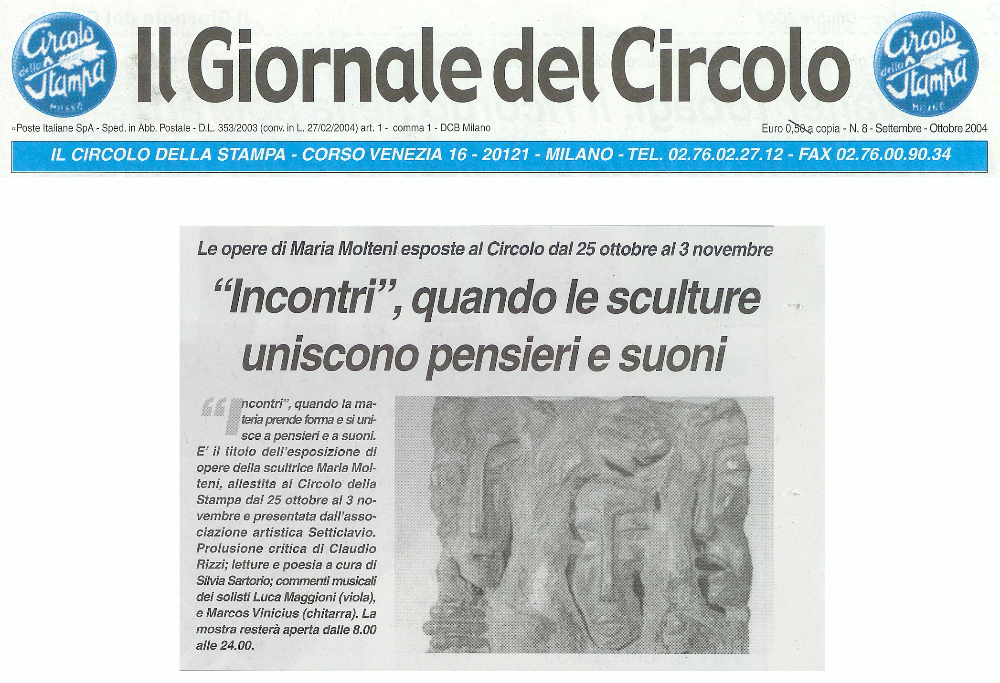

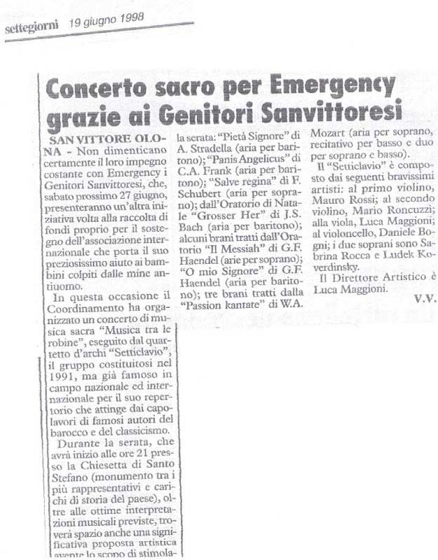